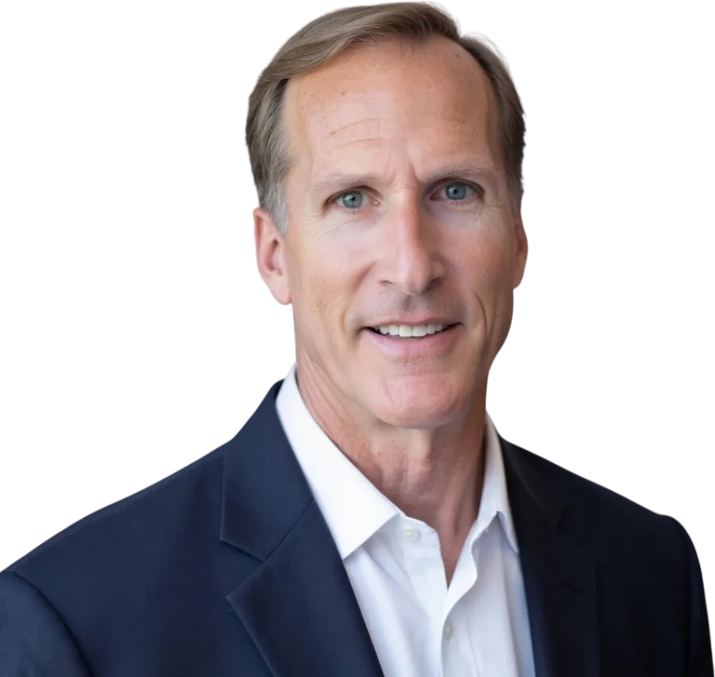

Meet Bob Wood
Coach. Builder. Recruiter. AI implementer. I help founder-led companies turn ambition into an operating system that can scale — and keep working when the founder is no longer in every decision.
I’m a West Point graduate, aerospace engineer, Army football player, helicopter pilot, and veteran Army officer. Over the last 30 years, I’ve led businesses and helped grow one company from $6M to $25M over 10 years. That experience taught me that growth is not just a sales challenge. It is a people, process, leadership, and execution challenge.
For TPS, I’m applying the discipline of EOS — the Entrepreneurial Operating System from Gino Wickman’s Traction — alongside the Visionary/Integrator relationship described in Wickman’s Rocket Fuel. I’m not positioning myself as a certified EOS implementer. I’m positioning myself as someone who understands the system deeply, believes in it, and has the judgment to apply it seriously to a business I care about seeing succeed.